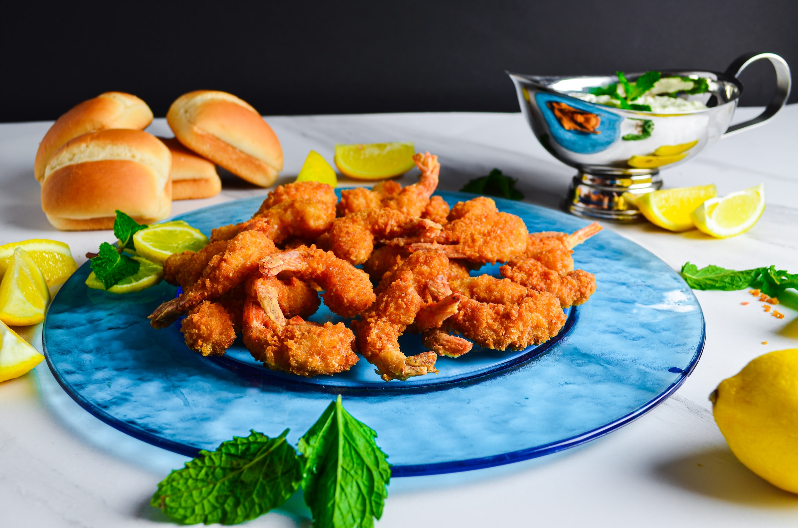

Fried Shrimp

Seafood Roulette: The Shell-Shocking Fun of Fried Shrimp!
Eating fried shrimp is like playing a game of seafood roulette. One minute you're biting into a succulent, crispy piece of heaven, and the next minute you're crunching down on a piece of shell like a madman. But it's all worth it for those moments of pure bliss, when the flavor explodes in your mouth and you feel like you're on a tropical beach, sipping a Mai Tai and watching the sunset. Plus, you can pretend you're a giant and each shrimp is a tiny boat you're sinking with your teeth!
Ingredients
- ⅓ cup all-purpose flour
- ¾ teaspoon salt
- ½ teaspoon ground black pepper
- 3 large eggs
- 1 ½ cups Kikkoman Panko Bread Crumbs
- 1 pound uncooked jumbo shrimp, peeled and deveined, tails left intact
- 1 cup vegetable oil for frying, or as needed
Steps
- Mix flour, salt, and pepper in a medium bowl. Beat eggs in a second medium bowl until frothy. Place bread crumbs in a third bowl.
- Dredge shrimp in the flour mixture, then shake off excess. Dip shrimp into beaten eggs, then press shrimp into bread crumbs, turning to coat both sides.
- Heat 2 inches oil in a large, heavy pot to 350 degrees F (175 degrees C).
- Deep-fry shrimp in batches in the hot oil until cooked through, about 1 minute. Use tongs to transfer shrimp to a paper towel-lined plate to drain. Repeat to cook remaining shrimp.
- Arrange shrimp on a platter to serve.